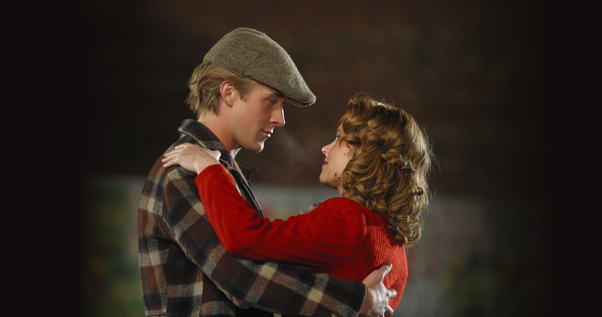

A Allie Hamilton (Rachel McAdams) una chica que proviene de familia adinerada, le importa muy poco que el chico
que conoce en Seabrook, durante las vacaciones de verano, se gane la vida de forma humilde como empleado de
una fabrica de madera. El amor que siente por el desde el primer momento de conocerse va más allá de los
prejuicios económicos y sociales que tantas veces quitan el sueño a los de su clase. Lo mejor de todo es que
Noah (Ryan Gosling), que así se llama el chico elegido, siente la misma atracción y amor por ella.